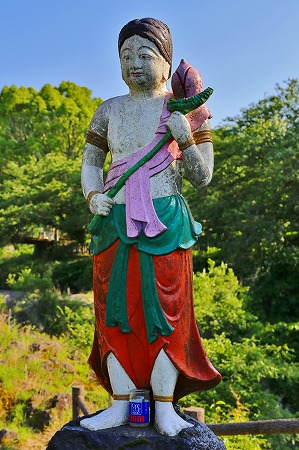

ちょいと前に佐賀のあちこちをウロウロしてきました。
本題に入る前に相変わらず
いつものように寄り道し放題でございます。ご勘弁を。
道中立ち寄ったのは道の駅厳木。
敷地内の片隅に巨大な像があった。
佐用姫像である。
佐用姫とは松浦佐用姫の事。
6世紀、新羅に出兵する大伴狭手彦と恋仲になった佐用姫が別れを惜しんで踊っているシーンだそうで。
道の駅の片隅にある割には建物に背を向けている。
何か変な配置だなー、と思っていたら、
コレゆっくりと回っているんですって。
ほとんど判らない位の速さで。
恐らく高速道路の出口にアピールしつつ、道の駅の客にもご挨拶しなければならないので回転するようにしたのだと推察できる。
まあ、東京の
おおくら大仏みたいなもんですな。
ハイ、以上寄り道！
で、本題はこちらの轟の滝。
嬉野温泉に近い割にはあまり知名度は高くないようだね。
3つの小さな川が集まり1本の川になるという、なかなかドラマチックな場所なのです。
ここに素敵な御方がいらっしゃると聞いて来たわけ。

滝の後方、つまり3つの川が流れている場所から寄ってみる。
何やら滝の上にメラメラと燃え上がっている方がいらっしゃいますよ。
正面に回り込んでみる。
うっほおおお！素晴らしくカラフルな不動明王様ではありませんか！
左右に眷属を従えて堂々の仁王立ち…いや、
不動立ちである。
黄緑色の衣、青緑色の肌、ピンクの腰巻、金髪、赤い炎…
超絶に見事な色使いである！
大きさは像自体が人間とほぼ同じか少し大きい位、後ろのファイアー入れても3メートルあるかないか。
台座入れて4～5ｍといった感じ。
ご尊顔。
頬がやや盛り上がっており、コンクリ仏の割には顔や腕の筋肉の付き方が立体的だ。
表情はユニークだが、決して素人が作ったレベルの像ではない。
これはどういう訳か。
この不動明王がある嬉野は周辺に唐津や波佐見、有田といった焼き物で有名な街が数多く存在する。
恐らくコンクリートの仏像よりも陶製の塑像の方がポピュラーな存在なのだろう。
つまり、
この地でコンクリ像を作る際はどうしても陶製の塑像を意識せざるを得ないのだ。
コンクリ製の仏像と陶器の仏像の歴史は遠いようで案外近い。
いずれも昭和初期に愛知県で発生した現象なのだが、詳しい事はその内、みっちりたっぷり語らせていただくとして、ここでは
陶芸とコンクリ仏が非常に近い位相にあることだけをやんわりと匂わせていただくとしよう。
不動明王の左右に立つ眷属の制吒迦童子と勢多迦童子。

こちらは不動明王の陶器っぽい造作に比べて如何にもザ☆コンクリ仏、といった風情である。
もしかしたら作者が違うのかもしれない。
実はこの不動尊、昭和19年に建立されたという。
実に珍しい
戦中大仏なのである。
昭和19年といえば戦局もかなり悪化しつつあるご時世である。
米軍が九州に初めて空襲をしたのがこの年の6月。
太平洋で制空権を失った時期と重なる。
徐々に迫りつつある漠然とした不安を払拭するために地元の有志の人々がこの不動明王を建立したのだろう。
不動明王はそもそも仏法の守護神でありまつろわぬ者を憤怒の相で脅す明王であった。
それが転じて戦時中には皇国にまつろわぬ者ども（ここでは米軍ですな）を成敗する存在となった、と考えられる。
皇国を救う神は本来であれば天照大神であり現人神である昭和天皇なのだろうが、如何せん時は緊急を要する戦時下。
神でも仏でも何でもありのご時世だったのだろう。
しかし神仏の加護も虚しく神国ニッポンは米国の支配下に置かれてしまう。
それから70余年。
不動様は相変わらず滝の上に鎮座している。
平成5年に塗り替えられたので状態は比較的良好だ。
滝の落ちた先は洗濯岩のような浅瀬。
にしても、どうだろう、このロケーション。
二本の滝の間に不動明王がそそり立つって…。
正直言って、佐賀の片田舎（失礼！）だから誰も気にしないかもだけど、これだけ風光明媚な場所にこんなポンチな不動明王（重ね重ね失礼！）が立っているなんて、
チョットあり得ない光景ですよねー。
別に不動明王様におかれましては何の罪もないので、このまま堂々と鎮座していただいて何の問題もない、と私は思うのですが、皆さん如何でしょうか？
それにしても佐賀のほとんど無名の滝にこんな素敵な不動様がおわすとは…
九州、深いっすね！